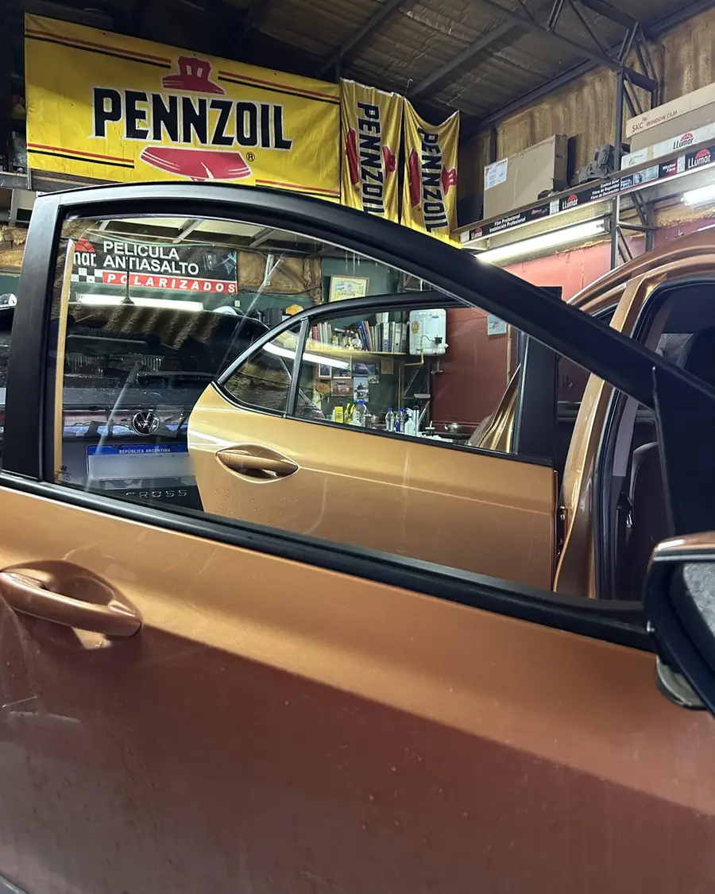

Polarizado de autos en Ushuaia
Autos, camionetas, utilitarios, casas y comercios. Somos un taller familiar, el primero de polarizado de la ciudad, y trabajamos con turno.

Antes y después
Fotos de trabajos hechos acá, sin retoques. Arrastrá la línea para ver la diferencia.

 AntesDespués
AntesDespués
Toyota Hilux, octubre 2026.




Qué hacemos
Te asesoramos para elegir el tono que más te conviene según el uso que le das.
- AutosPolarizado completo o solo algunos vidrios.
- Camionetas y 4x4Hilux, SW4, Amarok, Ranger y la que tengas.
- Combis, utilitarios, camiones y colectivosVehículos de trabajo y transporte de pasajeros.
- Retiro de polarizadoSacamos lámina vieja, burbujeada o descolorida y dejamos el vidrio limpio.
- Grabado de cristalesGrabamos los vidrios del vehículo.
- Casas y comerciosVidrieras, ventanas y oficinas.


El taller
Trabajamos bajo techo, con turno, así cada vehículo tiene el tiempo que necesita. Traelo como esté, del resto nos encargamos nosotros.
- DirecciónJuana Genoveva Fadul 431, Ushuaia · Ver en el mapa
- HorarioFALTA: horario de atención
- WhatsApp2901 40-9456
- Instagram@gpolarizadosush
Lo que dicen los clientes
Las reseñas están en Google, escritas por la gente que pasó por el taller.
Preguntas que nos hacen
¿Cuánto sale?
Depende del vehículo y de los vidrios que quieras polarizar. Mandanos marca y modelo por WhatsApp y te pasamos el precio al toque.
¿Cuánto tarda?
Un auto lleva alrededor de dos horas. Camionetas grandes, utilitarios y retiro de lámina vieja pueden llevar más; te lo decimos cuando pedís el turno.
¿Hay que dejar el auto lavado?
No. Traelo como esté, nosotros limpiamos los vidrios antes de colocar la lámina.
¿Sacan polarizado viejo?
Sí. Si la lámina está burbujeada, rayada o violeta, la retiramos y, si querés, te colocamos una nueva.
¿Polarizan casas y comercios?
Sí, vidrieras, ventanas y oficinas. Escribinos con las medidas aproximadas o una foto y te asesoramos.
¿Lo traés esta semana?
Escribinos con la marca y el modelo, te pasamos precio y el primer turno libre.
Escribir por WhatsApp